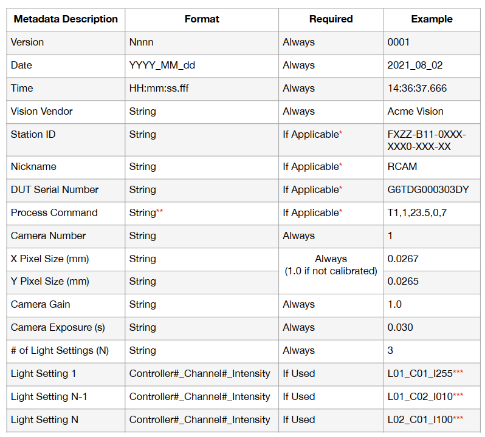
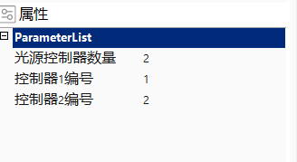
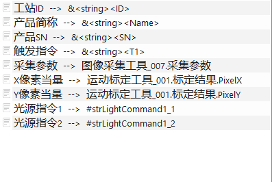
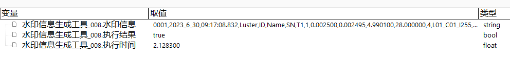

Công cụ tạo thông tin watermark chủ yếu được dùng trong hệ thống Apple, nhằm đáp ứng nhu cầu của khách hàng về việc thêm thông tin watermark vào hình ảnh. Watermark là một đoạn thông tin được gắn thêm phía sau dữ liệu ảnh, bao gồm các thông tin cơ bản khi thu nhận hình ảnh như tên dự án, thời gian, SN, phơi sáng, độ lợi… Các phần sau sẽ giới thiệu chi tiết hơn.
Thông tin watermark được gắn thêm sau dữ liệu ảnh là không thể nhìn thấy. Dù người dùng dùng phần mềm xem ảnh của bên thứ ba hay công cụ xử lý ảnh của VA để tải ảnh, hình ảnh hiển thị vẫn giống hệt ảnh gốc. Chỉ khi dùng phương pháp đặc biệt mới xem được phần thông tin bổ sung này, từ đó đảm bảo tính toàn vẹn và chính xác của hình ảnh.
Trong hệ thống Apple, khách hàng thường yêu cầu liên kết thông tin cơ bản của ảnh với chính ảnh đó. Thông thường, chúng ta thêm các thông tin này vào tên file, dẫn đến tên ảnh rất dài, ví dụ: “20230511_171601390_DTV2425F95J1CWWAC+F6_TW_VFBP_V1.1_0.05ms_CCD4_CAP” là một kiểu tên điển hình.
Hơn nữa, trong các dự án VA, đôi khi không thể lấy được các tham số như phơi sáng, độ lợi khi chụp ảnh. Ví dụ, khi camera dùng tham số không độc lập, người dùng không thể lấy được các tham số trong phần quản lý camera tại thời điểm chụp. Vì vậy, chúng tôi tạo ra công cụ tạo watermark chuyên dụng để giúp người dùng liên kết các tham số thường dùng trong dự án, từ đó nhanh chóng tạo ra một thông tin watermark hoàn chỉnh.
Hình 1 là định dạng watermark cố định do khách hàng Apple cung cấp. Do hiện tại chỉ có Apple đưa ra yêu cầu rõ ràng về thêm dữ liệu watermark vào ảnh, công cụ của chúng tôi tuân thủ nghiêm ngặt theo định dạng của Apple. Khi các khách hàng lớn khác có yêu cầu tương tự trong tương lai, định dạng này có thể được ưu tiên giới thiệu. Dưới đây là giải thích chi tiết về từng tham số trong watermark.

Version
Phiên bản thị giác, dùng để đánh dấu phiên bản phần mềm thị giác hiện đang sử dụng. Phiên bản thị giác theo định nghĩa của Apple: phiên bản dùng từ đầu dự án là 0001, mỗi lần nâng cấp sẽ tăng lên 0002, 0003… Do phiên bản VA của chúng ta (ví dụ 6.3.225.0041) không thể đồng nhất với khái niệm của khách hàng, nên tham số này trong watermark luôn là 0001.
Date + Time
Ngày giờ tạo ảnh. Date là năm-tháng-ngày; Time là giờ-phút-giây-mili giây.
Vision Vendor
Nhà cung cấp thị giác. Đối với watermark của chúng ta, tham số này luôn là Luster.
Station ID
Station ID là mã nhận diện trạm, dùng để xác định vị trí cụ thể của máy trong dây chuyền sản xuất. Chuỗi Station ID được trả về bởi ứng dụng điều khiển máy (thường là máy tính chủ) sau khi thiết lập kết nối TCP/IP với server của khách hàng thông qua lệnh cố định “ghi_station”. Ví dụ lấy ID trạm: Command to Bali: “ghi_station\n” Response from Bali: “ok@{FXZZ-B11-0XXX-XXX0-XXX-XX}@\n”
Nick Name
Tên viết tắt là tên gọi chung của jig/fixture (ví dụ: “RCAM”, “AAA”, “CGS”…). Thông tin này thường có thể lấy được nhanh chóng từ khách hàng hoặc nhà sản xuất thiết bị ở đầu dự án và thường không thay đổi trong suốt quá trình.
DUT Serial Number
Thường gọi tắt là SN. Tham số này biểu thị số SN của sản phẩm trong ảnh và có thể để trống.
Process Command
Lệnh kích hoạt, tức lệnh của máy tính chủ dùng để kích hoạt chụp ảnh. Trong quá trình sử dụng thực tế, nên liên kết tham số này để thuận tiện cho việc truy vết lỗi về sau. Có thể để trống.
Camera Number
Số thứ tự camera, khác với khái niệm thường dùng. Apple yêu cầu Camera Number phải là số thuần, biểu thị camera thứ N. Vì vậy, chúng tôi so sánh tên camera dùng để chụp ảnh với danh sách camera trong phần quản lý camera, xác định vị trí của nó và dùng vị trí này làm Camera Number.
X Pixel Size + Y Pixel Size
Pixel tương đương theo nghĩa truyền thống, biểu thị giá trị pixel tương đương lấy từ kết quả hiệu chuẩn của camera dùng cho ảnh này.
Camera Gain + Camera Exposure
Độ lợi và phơi sáng của camera khi chụp ảnh này.
# of Light Setting
Số lượng nguồn sáng được sử dụng khi chụp ảnh.
Light Setting1…
Lệnh điều khiển nguồn sáng, tương ứng với số lượng nguồn sáng. Có bao nhiêu nguồn sáng thì có bấy nhiêu dòng lệnh. Định dạng: L01_C01_I255, trong đó N sau L là số controller, N sau C là số kênh, N sau I là độ sáng của kênh.
Quy trình công cụ: liên kết tham số → thực thi công cụ → tạo dữ liệu watermark. Phần dưới sẽ giới thiệu trọng tâm cách tạo watermark dựa trên các tham số đã liên kết.
Thanh thuộc tính của công cụ được thể hiện ở Hình 2. Nội dung sau sẽ giới thiệu cách người dùng thao tác.

Số lượng bộ điều khiển ánh sáng, số hiệu bộ điều khiển N
Do một máy có thể sử dụng nhiều bộ điều khiển ánh sáng, và khi chụp một ảnh, có thể dùng nhiều nguồn sáng khác nhau, trong đó các nguồn sáng có thể được kết nối vào các bộ điều khiển khác nhau. Vì vậy, chỉ dựa vào lệnh điều khiển ánh sáng thì không thể xác định được nguồn sáng thuộc bộ điều khiển nào, nên người dùng cần nhập thủ công thông tin này. “Số lượng bộ điều khiển ánh sáng” biểu thị số bộ điều khiển được dùng để chụp ảnh hiện tại, phạm vi hỗ trợ là [1, 4]. Sau khi người dùng nhập số lượng, bên dưới sẽ xuất hiện số lượng trường tương ứng để nhập số hiệu các bộ điều khiển, với phạm vi [1, 4]. Các số hiệu bộ điều khiển không bắt buộc phải khác nhau. Như ví dụ trong hình, người dùng có thể đặt số hiệu của bộ điều khiển 1 và bộ điều khiển 2 đều là 1.
Lý do cần đặt số hiệu bộ điều khiển là vì trong thực tế, nếu ảnh chỉ sử dụng 1 bộ điều khiển ánh sáng nhưng đó là bộ điều khiển số 2, thì số lượng bộ điều khiển cần đặt là 1 và số hiệu bộ điều khiển 1 phải đặt là 2.
Chuỗi tham số của công cụ như Hình 3, nội dung dưới đây giải thích cách người dùng thao tác.

工站ID (Station ID)
Chính là Station ID khách hàng yêu cầu. Ý nghĩa cụ thể đã được giải thích ở phần trước, kiểu dữ liệu là string. Thông tin này thường được lưu trong biến toàn cục của VA và tất cả các công cụ tạo watermark trong giải pháp đều liên kết tham số này.
产品简称 (Nickname)
Chính là Nickname khách hàng yêu cầu. Ý nghĩa cụ thể xem phần trước, kiểu string, thường được lưu trong biến toàn cục VA và được liên kết bởi tất cả công cụ tạo watermark trong giải pháp.
产品SN (DUT Serial Number)
Chính là DUT Serial Number do khách hàng yêu cầu, ý nghĩa xem phần trước, kiểu string. Thường được gửi từ máy tính chủ thông qua công cụ truyền thông; nếu không có thì có thể không liên kết.
触发指令 (Process Command)
Chính là Process Command khách hàng yêu cầu. Ý nghĩa xem phần trước, kiểu string. Thường được gửi từ máy tính chủ thông qua công cụ truyền thông; nếu không có thì có thể không liên kết.
采集参数 (Tham số thu nhận ảnh)
Bao gồm tên camera, phơi sáng, độ lợi, giá trị Gamma… Chuỗi tham số được liên kết từ công cụ chụp ảnh hoặc nguồn ảnh. Công cụ sẽ tự động phân tích các giá trị này để điền Camera Number, Camera Gain, Camera Exposure.
X/Y 像素当量 (Pixel tương đương X/Y)
Người dùng liên kết giá trị pixel tương đương lấy từ kết quả hiệu chuẩn trong dự án. Giá trị này có thể lấy từ các công cụ thường dùng như: công cụ hiệu chuẩn tiêu chuẩn, hiệu chuẩn chuyển động, hiệu chuẩn liên kết laser, hiệu chuẩn camera–target…
光源指令N (Lệnh điều khiển nguồn sáng N)
Thường liên kết với tham số “định dạng lệnh” của công cụ truyền thông. Số lượng chuỗi tham số bằng với số lượng bộ điều khiển ánh sáng mà người dùng đã thiết lập ở thanh thuộc tính. Như ví dụ trong hình, để chụp ảnh phục vụ watermark cần dùng 2 bộ điều khiển ánh sáng, nên người dùng cần liên kết nội dung lệnh tương ứng cho “Lệnh ánh sáng 1” và “Lệnh ánh sáng 2”.
Hình 3 là danh sách kết quả đầu ra của công cụ tạo watermark, trong đó quan trọng nhất là “Thông tin Watermark”. Người dùng có thể truyền tham số này vào tham số watermark của công cụ lưu ảnh hoặc công cụ chụp màn hình.

| Lưu ý |
|---|
| 1. Với 4 tham số kiểu string cần người dùng tự liên kết: ID công trạm, Tên viết tắt sản phẩm, SN sản phẩm, Lệnh trigger — khi bên trong chúng có dấu phẩy tiếng Anh ( , ), công cụ sẽ tự động thay bằng dấu gạch ngang (-). Vì dấu phẩy tiếng Anh được dùng làm ký tự phân tách các mục trong thông tin watermark, nên nếu các thông tin khác cũng chứa dấu phẩy sẽ ảnh hưởng đến bố cục tổng thể. |
| 2. Ở chương 3, trong cột thứ ba của mỗi mục thông tin, mục “Required” nếu là “Always” nghĩa là bắt buộc. Tương ứng trong chuỗi tham số của công cụ, tham số thu thập, lệnh ánh sáng, và kết quả hiệu chuẩn là bắt buộc; các tham số khác là tùy chọn. |
| 3. Khách hàng yêu cầu thông tin watermark phải chứa toàn bộ dữ liệu, nên khi các mục tùy chọn không được liên kết thì chúng sẽ hiển thị như chuỗi rỗng trong watermark, dẫn đến việc xuất hiện hai dấu phẩy liền nhau — đây là hiện tượng bình thường. |
| 4. Khi các mục bắt buộc chưa được liên kết đúng, nội dung của chúng vẫn sẽ xuất hiện trong watermark. Với tham số thu thập, nếu không được liên kết đúng, giá trị Camera Number, Camera Gain và Camera Exposure trong watermark sẽ là 0; với lệnh ánh sáng, nếu liên kết sai, giá trị of Light Settings trong watermark sẽ là 0. |
| 5. Khi tham số không được liên kết, công cụ sẽ sử dụng giá trị mặc định để điền vào thông tin watermark. |
Hiện tại khi phân tích lệnh ánh sáng, công cụ sẽ đối chiếu nghiêm ngặt theo định dạng lệnh của bộ điều khiển ánh sáng được hỗ trợ. Khi nội dung người dùng nhập không khớp với định dạng hoặc loại bộ điều khiển mà VA hỗ trợ, dữ liệu ánh sáng trong watermark sẽ hiển thị là 0.
Dưới đây là ví dụ về việc VA thực hiện khớp loại nghiêm ngặt đối với bộ điều khiển Kangshida. Định dạng lệnh của nó là SA0255#SB0255#SC0255#SD0255#. Vì vậy, khi khớp, VA sẽ yêu cầu nghiêm ngặt lệnh phải chứa các đoạn có dạng SX0XXX#, trong đó X là giá trị không xác định. Nghĩa là ký tự thứ 1 phải là S, ký tự thứ 2 thuộc [A-H] (tương ứng kênh 1–8), ký tự thứ 3 là 0, ba ký tự tiếp theo là số thể hiện độ sáng, và ký tự thứ 7 là # làm ký tự kết thúc. Nếu không khớp hoàn toàn thì sẽ xem như không phải bộ điều khiển Kangshida.
Khi lệnh người dùng nhập không khớp với bất kỳ bộ điều khiển nào trong bảng hỗ trợ dưới đây, quá trình khớp sẽ thất bại và thông tin ánh sáng hiển thị 0. Bảng sau thể hiện các loại bộ điều khiển hiện VA hỗ trợ tự động phân tích; sau này có thể được bổ sung thêm.
| Loại bộ điều khiển ánh sáng hỗ trợ | Ví dụ định dạng lệnh |
|---|---|
| Kangshida | SA0255#SB0255#SC0255#SD0255# |
| Tên tham số | Giải thích |
|---|---|
| 工站ID | ID trạm là mã nhận diện trạm, thường được dùng để xác định vị trí của một máy cụ thể trên dây chuyền sản xuất. |
| 产品简称 | Tên viết tắt là tên gọi chung của carrier (ví dụ: “RCAM”, “AAA”, “CGS”), thường do khách hàng hoặc nhà sản xuất thiết bị cung cấp. |
| 产品SN | SN của sản phẩm hiện tại, thường được gửi từ máy chủ qua công cụ truyền thông. |
| 触发指令 | Lệnh từ máy chủ dùng để trigger thu thập ảnh. Khuyến nghị liên kết tham số này để thuận tiện cho việc truy vết. |
| 采集参数 | Bao gồm tên camera, thời gian phơi sáng, gain, Gamma… được xuất ra từ công cụ chụp ảnh hoặc nguồn ảnh. |
| X像素当量 | Pixel equivalent theo hướng X sau khi hoàn tất hiệu chuẩn của camera. |
| Y像素当量 | Pixel equivalent theo hướng Y sau khi hoàn tất hiệu chuẩn của camera. |
| 光源指令 | Lệnh điều khiển ánh sáng sử dụng khi thu thập ảnh hiện tại. |
| Tên tham số | Giải thích |
|---|---|
| 水印信息 | Tạo thông tin watermark cuối cùng theo phong cách Apple từ các tham số được liên kết trong chuỗi tham số, thường dùng để liên kết cho công cụ lưu ảnh hoặc chụp màn hình. |
| 执行结果 | Kết quả thực thi của công cụ. |
| 执行时间 | Thời gian công cụ thực thi. |
参见“\Samples\水印信息生成工具.gvp”。